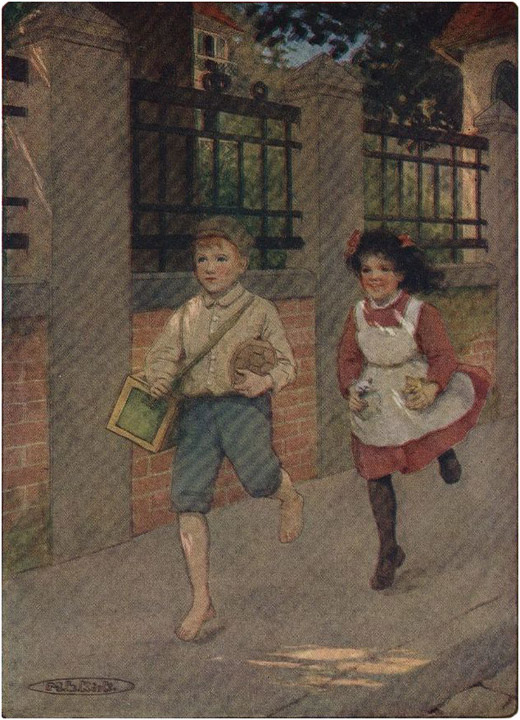
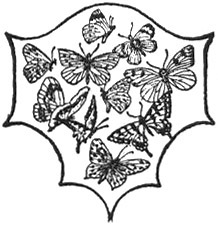

Ketika Heidi membuka matanya keesokan paginya, dia tidak tahu di mana dia berada. Dia mendapati dirinya berada di atas ranjang putih tinggi di sebuah ruangan yang luas. Melihat sekeliling, dia memperhatikan tirai putih panjang di depan jendela, beberapa kursi, dan sofa yang dilapisi kain krep; di sudut ruangan dia melihat wastafel dengan banyak benda aneh di atasnya.
Tiba-tiba Heidi teringat semua kejadian hari sebelumnya. Melompat dari tempat tidur, ia berpakaian dengan tergesa-gesa. Ia sangat ingin melihat langit dan tanah di bawahnya, seperti yang selalu dilakukannya di rumah. Betapa kecewanya ia ketika mendapati jendela-jendela terlalu tinggi sehingga ia hanya bisa melihat dinding dan jendela di seberangnya. Mencoba membukanya, ia memutar dari satu jendela ke jendela lainnya, tetapi sia-sia. Anak malang itu merasa seperti burung kecil yang ditempatkan di dalam sangkar berkilauan untuk pertama kalinya. Akhirnya ia harus pasrah, dan duduk di bangku kecil, memikirkan salju yang mencair di lereng dan bunga-bunga pertama musim semi yang telah ia sambut dengan penuh sukacita.
Tiba-tiba Tinette membuka pintu dan berkata singkat: "Sarapan sudah siap."
Heidi tidak menganggap itu sebagai panggilan, karena wajah pelayan itu tampak sinis dan mengancam. Dia menunggu dengan sabar apa yang akan terjadi selanjutnya, ketika Nona Rottenmeier menerobos masuk ke ruangan sambil berkata: "Ada apa, Adelheid? Apa kau tidak mengerti? Ayo sarapan!"
Heidi segera mengikuti wanita itu ke ruang makan, di mana Clara menyambutnya dengan senyuman. Ia tampak jauh lebih bahagia dari biasanya, karena ia mengharapkan hal-hal baru akan terjadi hari itu. Setelah sarapan berlalu tanpa gangguan, kedua anak itu diizinkan pergi ke perpustakaan bersama dan segera ditinggal sendirian.
"Bagaimana aku bisa melihat ke bawah?" tanya Heidi.
"Buka jendela dan intip keluar," jawab Clara, merasa geli dengan pertanyaan itu.
"Tapi tidak mungkin untuk membukanya," kata Heidi dengan sedih.
"Oh tidak. Kamu tidak bisa melakukannya dan aku juga tidak bisa membantumu, tetapi jika kamu meminta Sebastian, dia akan melakukannya untukmu."
Heidi merasa lega. Anak malang itu merasa seperti tahanan di kamarnya. Clara kemudian bertanya kepada Heidi seperti apa rumahnya, dan Heidi dengan senang hati menceritakan tentang kehidupannya di gubuk itu.
Sementara itu, tutor telah tiba, tetapi ia tidak diminta untuk pergi ke ruang belajar seperti biasanya. Nona Rottenmeier sangat gembira dengan kedatangan Heidi dan semua komplikasi yang timbul karenanya. Ia benar-benar bertanggung jawab atas hal itu, karena telah mengatur semuanya sendiri. Ia menyampaikan kasus yang malang itu kepada guru, karena ia ingin guru membantunya menyingkirkan anak itu. Namun, Tuan Candidate selalu berhati-hati dalam penilaiannya, dan tidak takut mengajar pemula.
Ketika wanita itu melihat bahwa Sebastian tidak akan berpihak padanya, dia membiarkan Sebastian masuk ke ruang kerja sendirian, karena A, B , C menyimpan kengerian besar baginya. Saat dia merenungkan banyak masalah, suara mengerikan seperti sesuatu jatuh terdengar di ruangan sebelah, diikuti oleh teriakan minta tolong kepada Sebastian. Berlari masuk, dia melihat tumpukan buku dan kertas di lantai, dengan taplak meja di atasnya. Aliran tinta hitam mengalir di sepanjang ruangan. Heidi telah menghilang.
"Lihat," seru Nona Rottenmeier sambil meremas tangannya. "Semuanya basah kuyup oleh tinta. Pernahkah hal seperti ini terjadi sebelumnya? Anak ini hanya membawa kesialan bagi kita."
Guru itu berdiri, memandang kehancuran itu, tetapi Clara sangat terhibur oleh kejadian ini, dan berkata: "Heidi tidak melakukannya dengan sengaja dan tidak boleh dihukum. Karena terburu-buru ingin pergi, dia tersangkut taplak meja dan menariknya hingga jatuh. Kurasa dia belum pernah melihat kereta kuda seumur hidupnya, karena ketika dia mendengar kereta kuda lewat, dia langsung berlari keluar seperti orang gila."
"Bukankah sudah kukatakan, Tuan Calon, bahwa dia sama sekali tidak mengerti soal tata krama? Dia bahkan tidak tahu bahwa dia harus duduk tenang saat pelajaran. Tapi ke mana dia pergi? Apa yang akan dikatakan Tuan Sesemann jika dia kabur?"
Ketika Nona Rottenmeier turun ke bawah untuk mencari anak itu, dia melihatnya berdiri di pintu yang terbuka, memandang ke arah jalan.
"Apa yang kau lakukan di sini? Bagaimana kau bisa kabur seperti itu?" tegur Nona Rottenmeier.
"Aku mendengar pepohonan cemara berdesir, tapi aku tak bisa melihatnya dan tak mendengarnya lagi ," jawab Heidi, sambil memandang ke arah jalan dengan sangat bingung. Suara kereta yang lewat mengingatkannya pada deru angin selatan di Pegunungan Alpen.
"Pohon cemara? Omong kosong! Kita tidak berada di hutan. Ikutlah denganku sekarang untuk melihat apa yang telah kau lakukan." Ketika Heidi melihat kerusakan yang telah ia sebabkan, ia sangat terkejut, karena ia tidak menyadarinya dalam ketergesaannya.
"Ini tidak boleh terjadi lagi," kata wanita itu dengan tegas. "Kamu harus duduk tenang selama pelajaran; jika kamu berdiri lagi, aku akan mengikatmu ke kursi. Apa kamu dengar?"
Heidi mengerti, dan berjanji untuk duduk tenang selama pelajarannya mulai saat itu. Setelah para pelayan merapikan ruangan, hari sudah larut, dan tidak ada waktu lagi untuk belajar. Tidak ada yang punya waktu untuk menguap pagi itu.
Pada sore hari, sementara Clara beristirahat, Heidi ditinggal sendirian. Ia duduk di aula dan menunggu kepala pelayan naik ke atas membawa barang-barang perak. Ketika kepala pelayan sampai di puncak tangga, ia berkata kepadanya: "Aku ingin bertanya sesuatu." Ia melihat bahwa kepala pelayan tampak marah, jadi ia menenangkannya dengan mengatakan bahwa ia tidak bermaksud jahat.
"Nama saya bukan Nona, kenapa Anda tidak memanggil saya Heidi?"
"Nona Rottenmeier menyuruhku memanggilmu Nona."
"Benarkah? Kalau begitu, pasti begitu. Aku sudah punya tiga nama," desah anak itu.
"Apa yang bisa saya lakukan untuk Anda?" tanya Sebastian sekarang.
"Bisakah kamu membukakan jendela untukku?"
"Tentu," jawabnya.
Sebastian mengambilkan bangku kecil untuk Heidi, karena ambang jendela terlalu tinggi sehingga Heidi tidak bisa melihat ke bawah. Dengan sangat kecewa, Heidi memalingkan kepalanya.
"Aku hanya melihat jalanan batu. Apakah di sisi lain rumah juga sama?"
"Ya."
"Ke mana Anda pergi untuk melihat segala sesuatu dari ketinggian?"
"Di menara gereja. Apakah kamu melihat menara di sana dengan kubah emasnya? Dari sana kamu bisa melihat semuanya."
Heidi segera turun dari bangku dan berlari menuruni tangga. Membuka pintu, ia mendapati dirinya berada di jalan, tetapi ia tidak lagi melihat menara itu. Ia berjalan dari jalan ke jalan, tidak berani menyapa orang-orang yang sibuk. Melewati sebuah sudut, ia melihat seorang anak laki-laki yang membawa organ barel di punggungnya dan seekor hewan aneh di lengannya. Heidi berlari menghampirinya dan bertanya: "Di mana menara dengan kubah emas itu?"
"Tidak tahu," jawabnya.
"Siapa yang bisa memberi tahu saya?"
"Tidak tahu."
"Bisakah Anda menunjukkan kepada saya gereja lain yang memiliki menara?"
"Tentu saja bisa."
"Kalau begitu, datang dan tunjukkan padaku."
"Apa yang akan kau berikan sebagai gantinya?" tanya anak laki-laki itu sambil mengulurkan tangannya. Heidi tidak memiliki apa pun di sakunya kecuali sebuah gambar bunga kecil. Clara baru memberikannya pagi ini, jadi dia enggan untuk melepaskannya. Namun, godaan untuk melihat jauh ke lembah terlalu besar baginya, dan dia menawarkan hadiah itu kepada anak laki-laki tersebut. Anak laki-laki itu menggelengkan kepalanya, yang membuat Heidi merasa puas.
"Apa lagi yang kamu inginkan?"
"Uang."
"Saya tidak punya, tetapi Clara punya. Berapa banyak yang harus saya berikan kepada Anda?"
"Dua puluh sen."
"Baiklah, tapi ayo ikut."
Saat mereka berjalan-jalan di jalan, Heidi mengetahui apa itu organ barel, karena dia belum pernah melihatnya. Ketika mereka tiba di depan sebuah gereja tua dengan menara, Heidi bingung harus melakukan apa selanjutnya, tetapi setelah menemukan sebuah lonceng, dia menariknya sekuat tenaga. Bocah itu setuju untuk menunggu Heidi dan menunjukkan jalan pulang jika Heidi memberinya upah dua kali lipat.
Gembok itu berderit dari dalam, dan seorang lelaki tua membuka pintu. Dengan suara marah, dia berkata: "Berani-beraninya kau membunyikan bel untukku? Tidakkah kau lihat bahwa pintu ini hanya untuk mereka yang ingin melihat menara?"
"Tapi aku memang melakukannya," kata Heidi.
"Apa yang ingin Anda lihat? Apakah ada yang menyuruh Anda datang?" tanya pria itu.
"Tidak; tapi aku ingin melihat ke bawah dari atas sana."
"Pulanglah dan jangan coba-coba lagi." Dengan itu, penjaga menara hendak menutup pintu, tetapi Heidi memegang ujung jubahnya dan memohon agar dia diizinkan masuk. Penjaga menara menatap mata anak itu, yang hampir berlinang air mata.
"Baiklah, ayo ikut, kalau kau memang mau," katanya sambil memegang tangannya. Keduanya menaiki banyak sekali anak tangga, yang semakin lama semakin sempit. Ketika mereka sampai di atas, lelaki tua itu mengangkat Heidi ke jendela yang terbuka.
Heidi hanya melihat lautan cerobong asap, atap, dan menara, dan hatinya merasa sedih. "Oh, astaga, ini berbeda dari yang kubayangkan," katanya.
"Nah! Apa yang diketahui gadis kecil sepertimu tentang pemandangan? Kita akan turun sekarang dan kau harus berjanji untuk tidak pernah membunyikan bel di menaraku lagi ."
Dalam perjalanan mereka melewati sebuah loteng, tempat seekor kucing abu-abu besar menjaga keluarga barunya di dalam keranjang. Kucing ini menangkap setengah lusin tikus setiap hari untuk dirinya sendiri, karena menara tua itu penuh dengan tikus dan mencit. Heidi menatapnya dengan heran, dan merasa senang ketika lelaki tua itu membuka keranjang.
"Betapa menggemaskannya anak-anak kucing ini, betapa cerdiknya makhluk-makhluk kecil ini!" serunya gembira ketika melihat mereka merangkak, melompat, dan berguling-guling.
"Apakah Anda ingin satu?" tanya lelaki tua itu.
"Untukku? Untuk kusimpan?" tanya Heidi, karena dia tidak percaya dengan apa yang didengarnya.
"Ya, tentu saja. Kamu bisa memelihara beberapa jika ada tempat untuk mereka," kata lelaki tua itu, senang menemukan rumah yang baik untuk anak-anak kucing itu.
Betapa senangnya Heidi! Tentu saja ada cukup ruang di rumah yang besar itu, dan Clara akan senang ketika melihat barang-barang yang cerdik itu.
"Bagaimana aku bisa membawa mereka bersamaku?" tanya anak itu, setelah ia mencoba menangkap salah satunya namun gagal.
"Aku bisa mengantarkan mereka ke rumahmu, jika kau memberitahuku di mana kau tinggal," kata teman baru Heidi, sambil mengelus kucing tua yang telah hidup bersamanya selama bertahun-tahun.
"Bawalah mereka ke rumah Tuan Sesemann; ada anjing emas di pintu, dengan cincin di mulutnya."
Pria tua itu telah lama tinggal di menara tersebut dan mengenal semua orang; Sebastian juga merupakan teman dekatnya.
"Saya tahu," katanya. "Tapi kepada siapa saya harus mengirimkannya? Apakah Anda milik Tuan Sesemann ?"
"Tidak. Tolong kirimkan ke Clara; dia pasti akan menyukainya."
Heidi hampir tak bisa melepaskan diri dari barang-barang cantik itu, jadi lelaki tua itu menaruh seekor anak kucing di setiap sakunya untuk menghiburnya. Setelah itu dia pergi.
Bocah itu menunggunya dengan sabar, dan setelah ia berpamitan kepada penjaga menara, ia bertanya kepada bocah itu: "Apakah kamu tahu di mana rumah Tuan Sesemann?"
"Tidak," jawabnya.
Ia menggambarkannya sebaik mungkin, sampai anak laki-laki itu mengingatnya. Mereka pun berangkat, dan tak lama kemudian Heidi mendapati dirinya menekan bel pintu. Ketika Sebastian tiba, ia berkata: "Cepatlah." Heidi masuk, dan anak laki-laki itu ditinggalkan di luar, karena Sebastian bahkan tidak melihatnya.
"Cepat naik, Nona kecil," desaknya. "Mereka semua menunggumu di ruang makan. Nona Rottenmeier tampak seperti meriam yang siap ditembakkan. Bagaimana mungkin kau bisa kabur begitu saja?"
Heidi duduk dengan tenang di kursinya. Tak seorang pun berbicara, dan keheningan terasa canggung. Akhirnya Nona Rottenmeier memulai dengan suara tegas dan serius: "Aku akan berbicara denganmu nanti, Adelheid. Bagaimana kau bisa meninggalkan rumah tanpa mengucapkan sepatah kata pun? Perilakumu sangat ceroboh. Sungguh keterlaluan berjalan-jalan sampai selarut ini!"
"Meong!" jawabnya.
"Aku tidak," Heidi memulai—"Meong!"
Sebastian hampir melemparkan piring itu ke atas meja, lalu menghilang.
"Cukup sudah," Nona Rottenmeier mencoba berkata, tetapi suaranya serak karena amarah. "Bangun dan tinggalkan ruangan ini."

Mereka pun mulai berjalan, dan tak lama kemudian Heidi menarik bel pintu .
Heidi bangkit. Dia mulai lagi. "Aku membuat—" "Meong! meong! meong!— "
"Heidi," kata Clara sekarang, "mengapa kamu selalu mengatakan 'meong' lagi, jika kamu melihat Nona Rottenmeier sedang marah?"
"Bukan aku yang melakukannya, ini ulah anak kucing," jelasnya.
"Apa? Kucing? Anak kucing?" teriak pengurus rumah tangga. "Sebastian, Tinette, singkirkan makhluk-makhluk mengerikan itu!" Dengan itu, dia berlari ke ruang kerja, mengunci diri di dalamnya, karena dia takut pada anak kucing lebih dari apa pun di dunia. Setelah Sebastian selesai tertawa, dia masuk ke ruangan. Dia telah meramalkan kegembiraan itu, karena telah melihat anak kucing-anak kucing itu ketika Heidi masuk. Suasana sekarang sangat damai; Clara memangku anak kucing-anak kucing kecil itu, dan Heidi berlutut di sampingnya. Mereka berdua bermain dengan gembira dengan kedua makhluk anggun itu. Kepala pelayan berjanji untuk menjaga pendatang baru itu dan menyiapkan tempat tidur untuk mereka di dalam keranjang.
Lama kemudian, ketika tiba waktunya tidur, Nona Rottenmeier dengan hati-hati membuka pintu. "Apakah mereka sudah pergi?" tanyanya. "Ya," jawab kepala pelayan, dengan cepat mengambil anak-anak kucing itu dan membawanya pergi.
Ceramah yang akan diberikan Nona Rottenmeier kepada Heidi ditunda hingga keesokan harinya, karena wanita itu terlalu kelelahan setelah ketakutan yang dialaminya. Mereka semua pergi tidur dengan tenang, dan anak-anak senang membayangkan bahwa anak kucing mereka memiliki tempat tidur yang nyaman.
